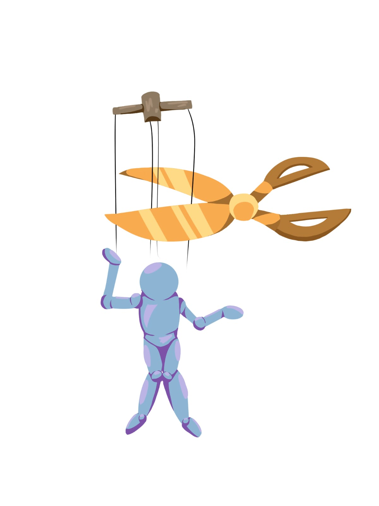

Este site foi desenvolvido para apoiar pessoas que estão passando por situações de violência e desejam denunciar. Ele também é voltado para quem suspeita estar sofrendo abusos ou para aqueles que querem ajudar outras pessoas a identificarem e denunciarem os agressores.
O abuso emocional é uma forma de violência que não deixa marcas físicas visíveis, mas causa sérios danos à saúde mental e à autoestima da vítima. Ele se caracteriza por um padrão repetitivo de comportamentos que visam controlar, humilhar, isolar, intimidar ou desvalorizar outra pessoa.
Insultos e críticas constantes: Ataques frequentes à aparência, inteligência ou capacidade da pessoa.
Manipulação: Fazer a vítima duvidar de sua própria memória, percepção da realidade ou sanidade.
Controle excessivo: Monitorar passos, redes sociais, roupas e com quem a pessoa se relaciona.
Isolamento: Afastar a vítima de amigos e familiares para que ela perca sua rede de apoio.
Chantagem emocional e punição pelo silêncio: Ignorar a pessoa ou fazê-la se sentir culpada por problemas que ela não causou.
O assédio moral no trabalho é a exposição de um funcionário a situações humilhantes, constrangedoras ou repetitivas de forma prolongada, durante a jornada de trabalho ou no exercício de suas funções. Trata-se de uma violência psicológica que visa desestabilizar a vítima, minar sua autoestima e forçá-la, muitas vezes, a desistir do emprego.
Desqualificação profissional: Atribuir tarefas impossíveis de cumprir, ignorar a presença do funcionário ou retirar suas funções habituais sem justificativa.
Isolamento social: Proibir colegas de falarem com a pessoa ou colocá-la em um local isolado fisicamente dos demais.
Humilhação pública: Críticas agressivas, piadas vexatórias ou broncas desproporcionais na frente da equipe.
Vigilância excessiva: Controlar minuciosamente o tempo de ida ao banheiro ou monitorar cada passo de forma persecutória.
O assédio sexual é uma forma de violência e discriminação baseada no gênero ou na sexualidade, caracterizada por abordagens, convites, comentários ou contatos físicos de cunho sexual que são indesejados e não consentidos pela pessoa que os recebe. Essa prática viola a liberdade, a dignidade e a integridade física e psicológica da vítima, podendo ocorrer tanto no espaço público quanto no privado.
Por chantagem (especialmente no ambiente de trabalho): Quando a aceitação ou a rejeição de uma investida sexual é utilizada como condição para que a pessoa consiga ou mantenha um emprego, obtenha uma promoção, melhore suas notas ou evite prejuízos na carreira.
Por intimidação ou ambiente hostil: Quando os comportamentos indesejados (como piadas de duplo sentido constantes, olhares insistentes, comentários sobre o corpo ou toques inapropriados) criam um ambiente intimidador, humilhante ou ofensivo.
A discriminação e o preconceito estrutural ocorrem quando as desvantagens e a exclusão de determinados grupos (baseadas em raça, gênero, orientação sexual, classe social ou deficiência) estão profundamente enraizadas no funcionamento político, econômico e cultural de uma sociedade.
Barreiras institucionais: Menor presença de pessoas negras, indígenas ou mulheres em cargos de alta liderança, salários desproporcionais para funções idênticas e maior rigor do sistema penal contra grupos marginalizados.
Naturalização de papéis: A tendência cultural de associar determinados grupos apenas a trabalhos subalternos ou a estereótipos negativos na mídia, no cinema e na publicidade.
Microagressões cotidianas: Comentários, "piadas", olhares de desconfiança ou surpresa ao ver uma pessoa de um grupo minoritário em espaços de privilégio ou poder.
As microagressões são comentários, atitudes ou comportamentos sutis, muitas vezes involuntários ou expressos em tom de "brincadeira", que disparam ofensas ou reforçam estereótipos negativos contra grupos historicamente marginalizados (seja por raça, gênero, orientação sexual, idade ou deficiência). O termo "micro" não significa que o impacto seja pequeno, mas sim que a agressão ocorre em nível individual e cotidiano, sendo muitas vezes difícil de confrontar porque o agressor raramente tem a intenção consciente de ofender.
Microinsultos: Comentários condescendentes que trazem um preconceito oculto.
Microinvalidações: Atitudes que anulam ou negam a vivência e os sentimentos da pessoa.
Microataques: Comportamentos de exclusão ou desconfiança sutil.
A violência patrimonial é um tipo de abuso frequentemente praticado em relações domésticas ou familiares, configurando-se quando o agressor destrói, retém ou rouba objetos, documentos pessoais, bens, valores ou recursos econômicos da vítima. Esse tipo de violência visa controlar as decisões da pessoa, limitar sua autonomia e aumentar sua dependência financeira em relação ao abusador.
Destruição de bens: Rasgar roupas, quebrar o celular, danificar instrumentos de trabalho ou quebrar objetos de valor sentimental da vítima de propósito.
Retenção de documentos: Esconder ou confiscar passaporte, carteira de trabalho, cartões de crédito ou documentos de propriedade para impedir a livre circulação ou independência da pessoa.
Controle financeiro extremo: Reter o salário da parceira (ou familiar), privá-la de dinheiro para necessidades básicas ou exigir prestação de contas minuciosa de cada centavo gasto.
Estelionato e apropriação: Fazer empréstimos ou dívidas no nome da vítima sem o consentimento dela, ou vender bens que pertencem a ela sem autorização.
A manipulação psicológica é um tipo de abuso emocional em que uma pessoa utiliza táticas subversivas, mentiras ou distorções da realidade para mudar a percepção, o comportamento ou o pensamento de outra pessoa em benefício próprio. O objetivo central é obter controle, poder ou vantagens em uma relação, fazendo com que a vítima aja contra a sua própria vontade ou bem-estar sem perceber claramente o que está acontecendo. Diferente de uma influência saudável ou de uma persuasão comum, a manipulação é baseada na desonestidade e na exploração das fraquezas ou sentimentos da outra pessoa.
Inversão de culpa: Fazer a vítima se sentir responsável por erros ou atitudes agressivas do próprio manipulador.
Gaslighting: Negar fatos, conversas ou acontecimentos reais para fazer com que a vítima duvide de sua própria memória, percepção ou sanidade.
Chantagem emocional: Usar o afeto, o medo do abandono ou a indução de pena para forçar o outro a ceder a uma exigência.
Complexo de mártir: Vitimizar-se constantemente para que as necessidades e sentimentos do manipulador sempre tenham prioridade absoluta na relação.
O etarismo é a discriminação, o preconceito ou a estereotipagem contra indivíduos ou grupos com base exclusivamente na sua idade. Embora possa afetar os mais jovens, ele se manifesta de forma muito mais severa e frequente contra as pessoas idosas, marginalizando-as social e economicamente. Essa forma de preconceito está estruturada na ideia equivocada de que o valor, a utilidade ou a capacidade de uma pessoa diminuem à medida que ela envelhece.
No mercado de trabalho: Barreiras invisíveis na contratação de profissionais mais velhos, demissões baseadas apenas na idade ou a exclusão de funcionários veteranos de treinamentos tecnológicos.
Infantilização e exclusão: Tratar o idoso como se fosse uma criança (usando diminutivos excessivos ou ignorando sua autonomia) e excluí-lo de conversas ou decisões familiares e digitais.
Estereótipos culturais: Associar a velhice unicamente à fragilidade, invalidez, teimosia ou incapacidade de aprender coisas novas.
A violência verbal é uma forma de agressão psicológica expressa por meio de palavras faladas, escritas ou gestos agressivos. Ela ocorre quando alguém utiliza a linguagem com a intenção deliberada de humilhar, insultar, intimidar, desvalorizar ou exercer controle sobre outra pessoa. Embora não cause lesões físicas na pele, esse tipo de violência provoca feridas emocionais profundas, gerando estresse crônico, ansiedade e destruição da autoestima da vítima.
Insultos e xingamentos: O uso de palavras ofensivas ou palavrões direcionados à identidade, aparência ou capacidade da pessoa.
Gritos e tom de voz ameaçador: Utilizar a elevação da voz de forma agressiva para intimidar, silenciar ou colocar medo no outro.
Julgamentos e críticas destrutivas: Apontar falhas de maneira cruel e constante, com o objetivo de fazer a pessoa se sentir inferior ou incapaz.
Sarcasmo hostil e deboche: Utilizar piadas ácidas, ironias ou imitações depreciativas para ridicularizar a vítima, frequentemente diante de outras pessoas.
O abuso infantil é qualquer ação ou omissão que cause dano real ou potencial à saúde, desenvolvimento ou dignidade de uma criança ou adolescente. Ele ocorre em uma relação de poder, confiança ou responsabilidade, geralmente praticado por adultos ou cuidadores.
Abuso Físico: O uso da força física que resulte ou possa resultar em danos corporais, como agressões, espancamentos ou castigos corporais severos.
Abuso Emocional ou Psicológico: Comportamentos como humilhações constantes, rejeição, ameaças, amedrontamento ou chantagens que prejudicam o desenvolvimento mental e a autoestima da criança.
Abuso Sexual: O envolvimento de uma criança em qualquer atividade sexual não consentida (já que menores não têm maturidade legal ou psicológica para consentir), incluindo toque, exposição ou exploração.
Negligência: A falha contínua e crônica em prover as necessidades básicas e vitais da criança, como alimentação, abrigo, vestuário, cuidados médicos, afeto e acesso à educação.